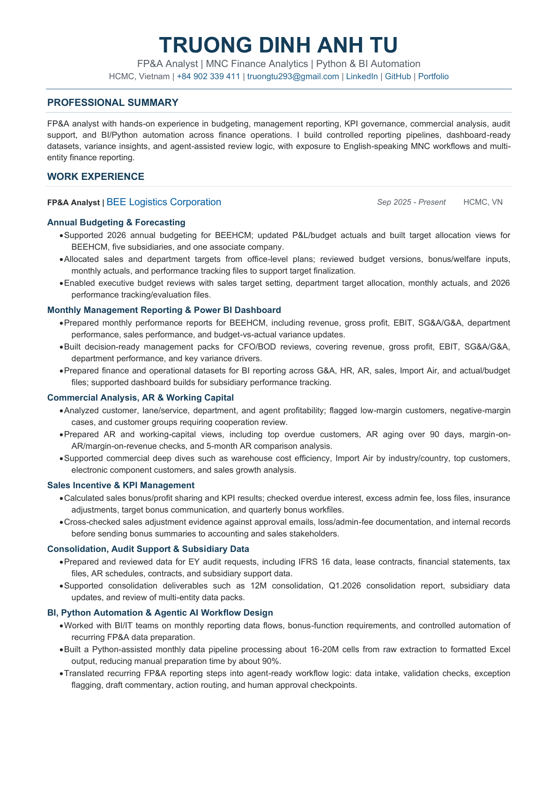
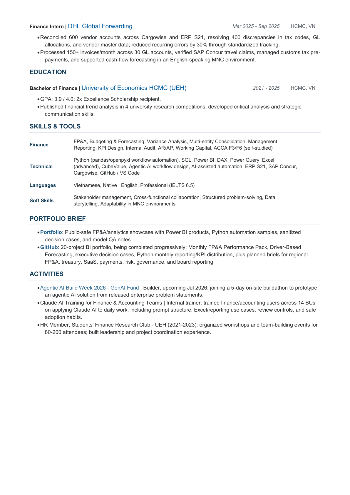

FP&A CV
Truong Dinh Anh Tu - CV
View the CV directly in the browser. Use the download button below if you want a local copy with the filename
Truong-Dinh-Anh-Tu-CV-2026.pdf.


FP&A CV
View the CV directly in the browser. Use the download button below if you want a local copy with the filename
Truong-Dinh-Anh-Tu-CV-2026.pdf.

